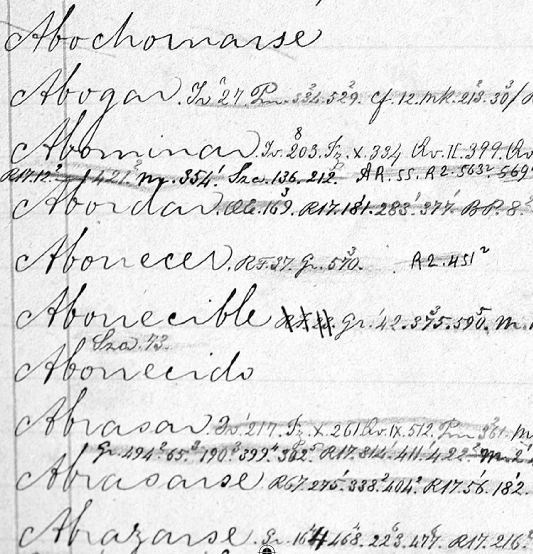

Festival de la palabra. Como preámbulo de la conmemoración del “Año de Cuervo”, a principios del mes de febrero de 2011, se llevó a cabo la segunda versión del ‘Festival de la Palabra’, actividad organizada por el Instituto Caro y Cuervo y la Asociación de Amigos del Instituto. El acto inaugural fue de la conferencia del escritor Fernando Vallejo sobre Rufino José Cuervo, contó con la presencia de Mariana Garcés Córdoba, ministra de Cultura, Elvira Cuervo de Jaramillo, exministra de Cultura y Genoveva Iriarte Esguerra, directora general del Instituto Caro y Cuervo. En esta ceremonia la señora ministra dio lectura a la resolución que oficializa la efemérides. Por su parte Elvira Cuervo de Jaramillo aseguró durante su intervención que “es muy importante llegar a las nuevas generaciones destacando la figura de Rufino José Cuervo, quien dedicó su vida a estudiar, a modernizar y a volver contemporáneo la lengua de Castilla. No solo en Colombia, sino en todo el mundo hispanoparlante se debe reconocer a Cuervo como el artífice del buen español que nos une a todos”.
Filólogo. Cuervo es considerado como el más ilustre filólogo en lengua española. En la introducción del Diccionario, Cuervo se empeña en señalar la diferencia entre el filólogo y el lingüista: “El lexicógrafo, aprovechándonos de la oportuna comparación con que Schleicher muestra lo que va del lingüista al filólogo, el lexicógrafo, que antes sólo había pensado en recoger voces y acepciones como el botánico allega plantas, sin ver en ellas más que individuos del reino vegetal, ni atender a otra cosa para clasificarlas y ordenarlas que a las condiciones de su organización, entra ahora á calificarlas y escogerlas, como el jardinero, que, poniendo los ojos en la belleza de la forma y el color, o en la suavidad del aroma, desecha acaso como hierbas vulgares, inútiles a su designio, muchas que para el primero serían de valor inapreciable”[1].
Finalización del Diccionario. En 1986 el director del Instituto, Ignacio Chaves Cuevas, estableció un nuevo equipo lexicográfico, con el decidido empeño de dar término a la empresa para el año de 1992. Se contaba con un corpus lexicográfico de más de 600.000 papeletas fotocopiadas, además del material dejado por Cuervo y por F. A. Martínez. Se manejaban los conceptos teóricos y las técnicas de redacción de las monografías, resultado de las investigaciones elaboradas durante los cuarenta y cuatro años de funcionamiento de la institución, y existían recursos materiales de tecnología más avanzada, gracias a la colaboración de entidades como la Fundación Mario Santodomingo, la oei, y las Comisiones colombiana y española para el V Centenario. Se inició la etapa final de redacción a partir de la letra F y su correspondiente evaluación, etapa que contó con el trabajo de más de una veintena de redactores en 1994. “No se engañe nadie, no, en advertir que solo fueron nueve años calendario, sino que multiplicados por veinte, la suma se acerca a los dos siglos de inversión, para que con el mayor rigor científico, se terminara la obra de nuestro ilustre colombiano”. La finalización del Diccionario fue reconocida con el Premio Príncipe de Asturias de Comunicación y Humanidades 1999.
Fuentes del Diccionario. Cuervo seleccionó un amplio conjunto de obras y autores de donde extrajo los ejemplos, la selección de las fuentes la basó generalmente en el lenguaje literario: novela, poesía, obras de teatro, pero sin desatender tratados de filosofía, religión, derecho, historia y muchas otras disciplinas y actividades del ser humano pues aquí si se cumple aquello de que nada de lo humano le debe ser desconocido al lexicógrafo. Otro de los criterios de selección fue el de dar representación proporcionada a obras y autores de todas las épocas de la lengua.
* * *
[1] Cuervo, 1886, xxxi.
